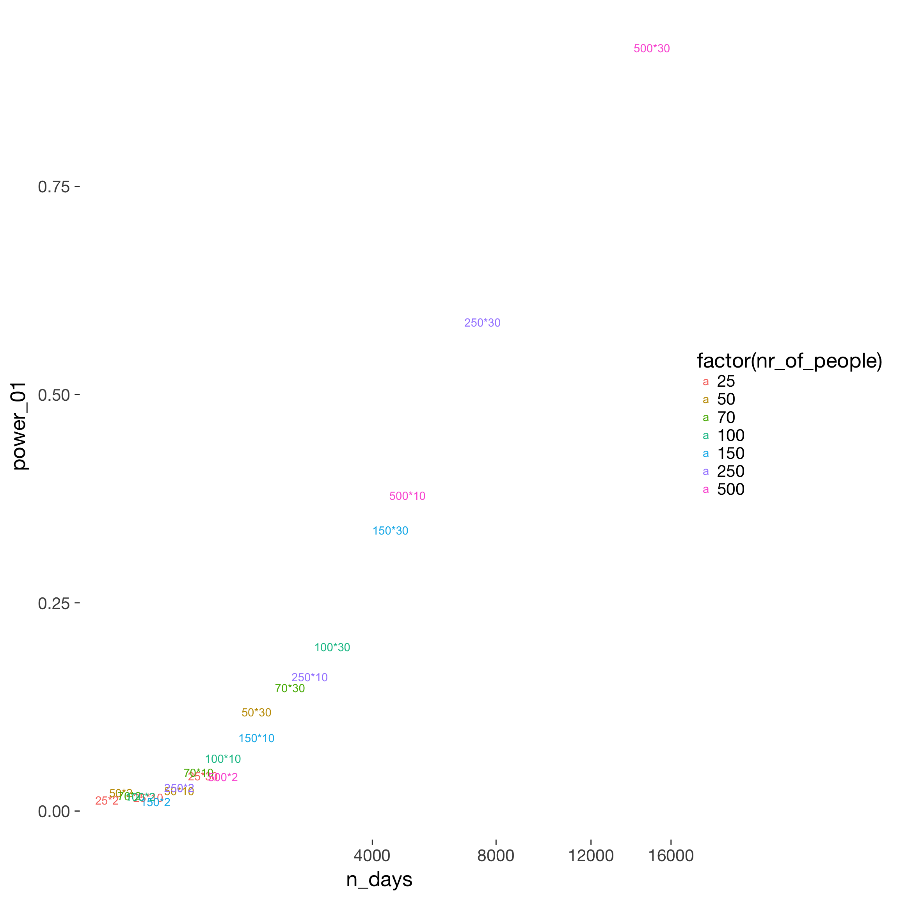
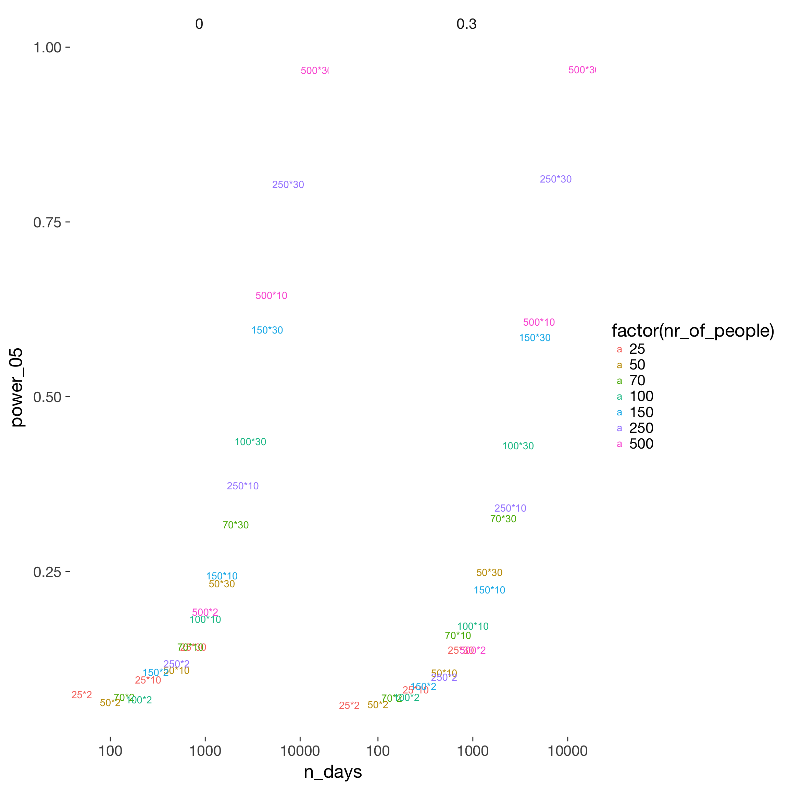
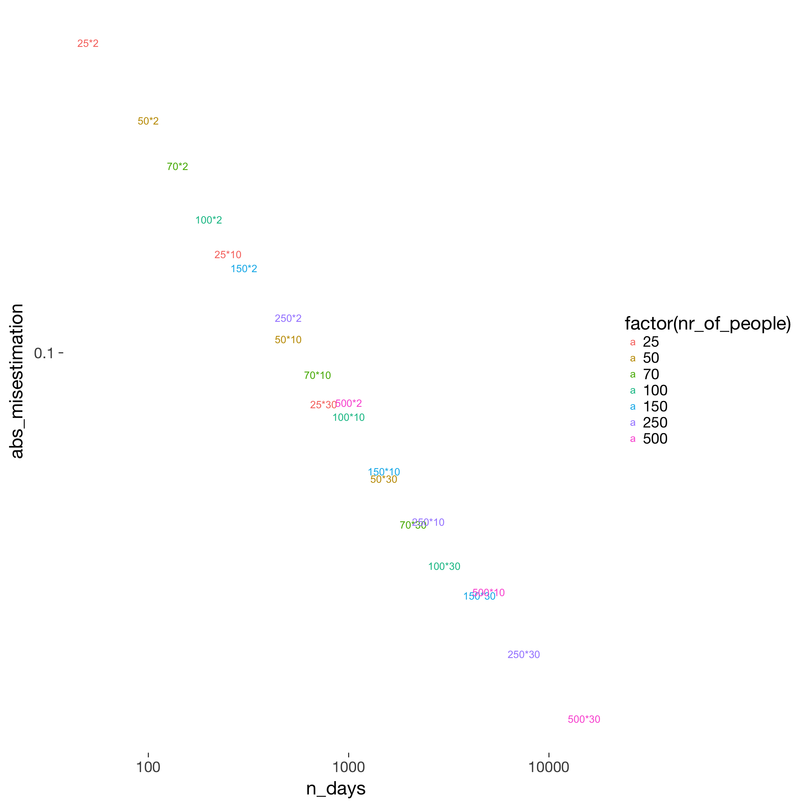
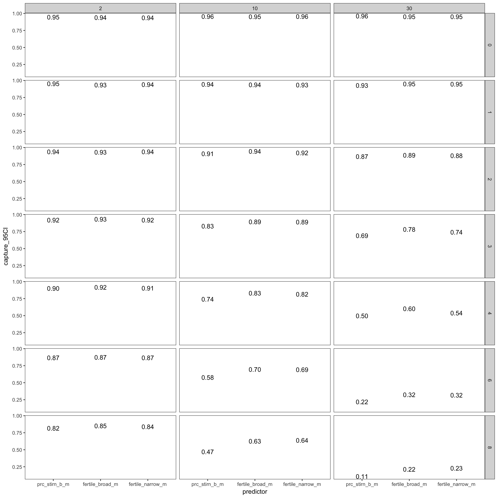
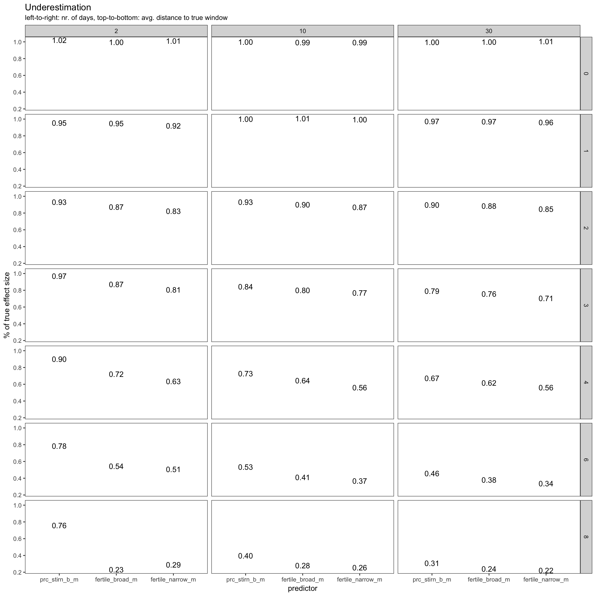
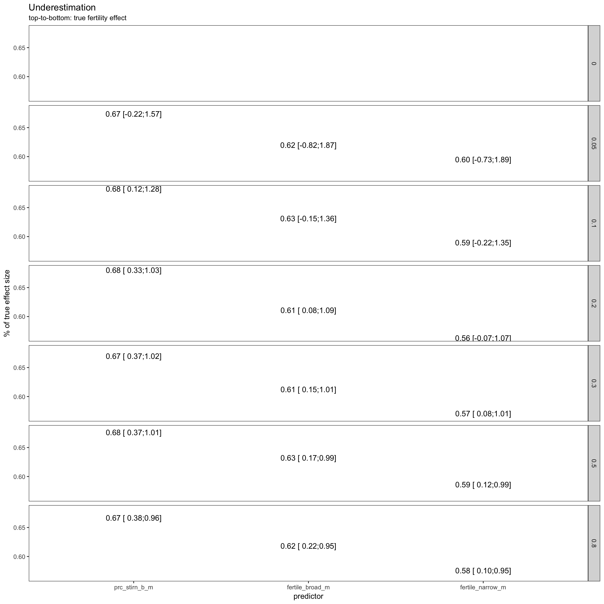
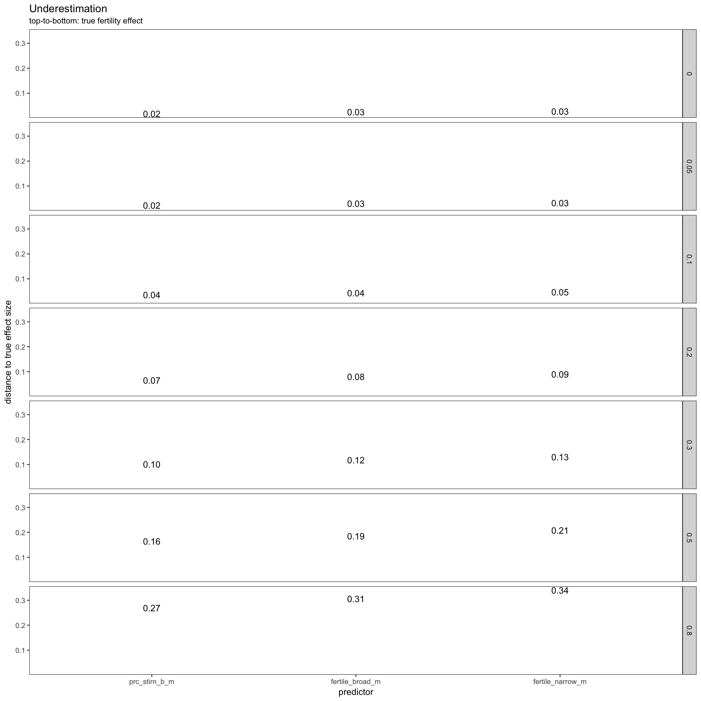

The annotated simulation script and the annotated helper functions provide the detail that this summary leaves out.
library(knitr)
opts_chunk$set(fig.width = 12, fig.height = 12, cache = T, warning = F, message = F, cache = F)source("0_helpers.R")
loadRDS("cycle_sims.rds")format_digits = function(x) { format(round(x, 2), nsmall = 2)}
sims = cycle_sims
table(round(sims$p.value - sims$p.value_KR, 10)) # exactly the same, always##
## 0
## 7836798sims %>%
select(-p.value_KR) ->
sims
print_unique = function(x) {
print(unique(x))
1
}
sims %>%
select(fertility_effect, nr_of_people, nr_days, dayspan, miss_window, trait_effect, predictor) %>%
summarise_each(funs(print_unique)) -> x## [1] 0.00 0.05 0.10 0.20 0.30 0.50 0.80
## [1] 25 50 70 100 150 250 500
## [1] 2 10 30
## [1] 1:38 17-19,4-6
## Levels: 1:38 17-19,4-6
## [1] 0 1 2 3 4 6 8
## [1] 0.0 0.3
## [1] prc_stirn_b_m fertile_broad_m fertile_narrow_m
## Levels: prc_stirn_b_m fertile_broad_m fertile_narrow_msims %>%
group_by(fertility_effect, nr_of_people, nr_days, dayspan, miss_window, trait_effect, predictor) %>% # ,covariate_used, outcome, predictor, stopping.n
summarise(
usable_days = mean(usable_days, na.rm = T),
not_converged = sum(is.na(p.value)),
converged = sum(!is.na(p.value)),
power_001 = sum(p.value <= 0.001, na.rm = T)/converged,
power_01 = sum(p.value <= 0.01, na.rm = T)/converged,
power_05 = sum(p.value <= 0.05, na.rm = T)/converged,
power_10 = sum(p.value <= 0.10, na.rm = T)/converged,
capture_95CI = sum(fertility_effect > conf.low & fertility_effect < conf.high, na.rm = T)/converged,
misestimation = mean(estimate / fertility_effect, na.rm = T),
misestimation_lo = quantile(estimate / fertility_effect, probs = 0.025, na.rm = T),
misestimation_hi = quantile(estimate / fertility_effect, probs = 0.975, na.rm = T),
abs_misestimation = mean(abs(estimate - fertility_effect), na.rm = T),
misestimation_over_se = mean((estimate - fertility_effect) / std.error, na.rm = T)
) ->
powerpower %>% filter(miss_window == 0, nr_days == 30, nr_of_people %in% c(150,500), fertility_effect == 0.20, fertility_effect < 0.80, dayspan == "1:38", trait_effect == 0.3) %>%
ungroup() %>%
select(predictor, fertility_effect, nr_of_people,nr_days, power_01, power_05) %>% arrange(fertility_effect, predictor, nr_of_people, nr_days) %>% pander()| predictor | fertility_effect | nr_of_people | nr_days | power_01 | power_05 |
|---|---|---|---|---|---|
| prc_stirn_b_m | 0.2 | 150 | 30 | 0.993 | 0.999 |
| prc_stirn_b_m | 0.2 | 500 | 30 | 1 | 1 |
| fertile_broad_m | 0.2 | 150 | 30 | 0.843 | 0.949 |
| fertile_broad_m | 0.2 | 500 | 30 | 1 | 1 |
| fertile_narrow_m | 0.2 | 150 | 30 | 0.839 | 0.94 |
| fertile_narrow_m | 0.2 | 500 | 30 | 1 | 1 |
power %>% filter(miss_window == 0, nr_days == 30, nr_of_people %in% c(150,500), fertility_effect == 0.10, fertility_effect < 0.80, dayspan == "1:38", trait_effect == 0.3) %>%
ungroup() %>%
select(predictor, fertility_effect, nr_of_people,nr_days, power_01, power_05) %>% arrange(fertility_effect, predictor, nr_of_people, nr_days) %>% pander()| predictor | fertility_effect | nr_of_people | nr_days | power_01 | power_05 |
|---|---|---|---|---|---|
| prc_stirn_b_m | 0.1 | 150 | 30 | 0.445 | 0.689 |
| prc_stirn_b_m | 0.1 | 500 | 30 | 0.972 | 0.994 |
| fertile_broad_m | 0.1 | 150 | 30 | 0.199 | 0.414 |
| fertile_broad_m | 0.1 | 500 | 30 | 0.746 | 0.895 |
| fertile_narrow_m | 0.1 | 150 | 30 | 0.205 | 0.435 |
| fertile_narrow_m | 0.1 | 500 | 30 | 0.741 | 0.895 |
power %>% filter(miss_window == 0, nr_days == 30, nr_of_people %in% c(150,500), fertility_effect == 0.05, fertility_effect < 0.80, dayspan == "1:38", trait_effect == 0.3) %>%
ungroup() %>%
select(predictor, fertility_effect, nr_of_people,nr_days, power_01, power_05) %>% arrange(fertility_effect, predictor, nr_of_people, nr_days) %>% pander()| predictor | fertility_effect | nr_of_people | nr_days | power_01 | power_05 |
|---|---|---|---|---|---|
| prc_stirn_b_m | 0.05 | 150 | 30 | 0.095 | 0.248 |
| prc_stirn_b_m | 0.05 | 500 | 30 | 0.365 | 0.594 |
| fertile_broad_m | 0.05 | 150 | 30 | 0.041 | 0.137 |
| fertile_broad_m | 0.05 | 500 | 30 | 0.183 | 0.387 |
| fertile_narrow_m | 0.05 | 150 | 30 | 0.046 | 0.141 |
| fertile_narrow_m | 0.05 | 500 | 30 | 0.195 | 0.392 |
What matters for power seems to be number of days in total, no matter whether this was achieved by sampling more people or more days per person. High sample sizes should be aimed for to show generalizability and if interindividual moderators are to be tested. However, to show a main effect, it is probably considerably cheaper to ask the same people more than twice. Costs are saved on time spent on interindividual questionnaires, screening, overhead per person etc.
power$n_days = power$nr_of_people * power$nr_days
power %>%
filter(fertility_effect == 0.10, dayspan == "1:38", miss_window == 2, trait_effect == 0.3, predictor == "prc_stirn_b_m") %>%
ggplot(aes(x = n_days, y = power_01, color = factor(nr_of_people))) +
geom_text(aes( label = paste0(nr_of_people, "*", nr_days))) +
scale_x_sqrt()
power$n_days = power$nr_of_people * power$nr_days
power %>%
filter(fertility_effect == 0.10, dayspan == "1:38", miss_window == 2, predictor == "prc_stirn_b_m") %>%
ggplot(aes(x = n_days, y = power_05, color = factor(nr_of_people))) +
geom_text(aes( label = paste0(nr_of_people, "*", nr_days))) +
facet_wrap(~ trait_effect) +
scale_x_log10()
power %>%
filter(fertility_effect == 0.10, dayspan == "1:38", miss_window == 2, predictor == "prc_stirn_b_m", trait_effect == 0.3) %>%
ggplot(aes(x = n_days, y = abs_misestimation, color = factor(nr_of_people))) +
geom_text(aes( label = paste0(nr_of_people, "*", nr_days))) +
scale_x_log10() + scale_y_log10()
I.e. when do we systematically under/overestimate. The main simulated contributor to underestimation is the number of days by which the day of ovulation is missed on average. Not simulated, but likely having a similar effect are
power %>%
filter(fertility_effect == 0.30, dayspan == "1:38", nr_of_people == 100, trait_effect == 0.3) %>% ggplot(aes(x = predictor, y = capture_95CI)) +
geom_text(aes( label = format_digits(capture_95CI))) +
facet_grid(miss_window ~ nr_days) + theme_bw()
power %>%
filter(fertility_effect == 0.30, dayspan == "1:38", nr_of_people == 100, trait_effect == 0.3) %>% ggplot(aes(x = predictor, y = misestimation)) +
geom_text(aes( label = format_digits(round(misestimation,2)))) +
facet_grid(miss_window ~ nr_days) + theme_bw() +
ylab("% of true effect size") +
ggtitle("Underestimation", subtitle = "left-to-right: nr. of days, top-to-bottom: avg. distance to true window")
for 30 days, 500 participants, missing the fertile window on average by four days
power %>%
filter(miss_window == 4, nr_days == 30, dayspan == "1:38", nr_of_people == 500, trait_effect == 0.3) %>% ggplot(aes(x = predictor, y = misestimation)) +
geom_text(aes( label = paste0(form(misestimation), " [", form(misestimation_lo), ";", form(misestimation_hi),"]"))) +
facet_grid(fertility_effect ~ .) + theme_bw() +
ylab("% of true effect size") +
ggtitle("Underestimation", subtitle = "top-to-bottom: true fertility effect")
power %>%
filter(miss_window == 4, nr_days == 30, dayspan == "1:38", nr_of_people == 500, trait_effect == 0.3) %>% ggplot(aes(x = predictor, y = abs_misestimation)) +
geom_text(aes( label = format_digits(round(abs_misestimation,2)))) +
facet_grid(fertility_effect ~ .) + theme_bw() +
ylab("distance to true effect size") +
ggtitle("Underestimation", subtitle = "top-to-bottom: true fertility effect")
sims %>%
filter(fertility_effect != 0, nr_of_people == 500, dayspan == "1:38", nr_days == 30, trait_effect == 0.3, predictor == 'prc_stirn_b_m') %>%
group_by( nr_days, dayspan, miss_window, trait_effect, predictor) %>% # ,covariate_used, outcome, predictor, stopping.n
summarise(
misestimation = form(mean(estimate / fertility_effect, na.rm = T)),
misestimation_lo = form(quantile(estimate / fertility_effect, probs = 0.1, na.rm = T)),
misestimation_hi = form(quantile(estimate / fertility_effect, probs = 0.9, na.rm = T))
) ->
misest
pander(misest %>% ungroup() %>% select(miss_window, starts_with("misestimation")))| miss_window | misestimation | misestimation_lo | misestimation_hi |
|---|---|---|---|
| 0 | 1.00 | 0.81 | 1.18 |
| 1 | 0.98 | 0.79 | 1.18 |
| 2 | 0.90 | 0.68 | 1.14 |
| 3 | 0.79 | 0.54 | 1.06 |
| 4 | 0.67 | 0.40 | 0.95 |
| 6 | 0.46 | 0.14 | 0.79 |
| 8 | 0.30 | -0.03 | 0.64 |